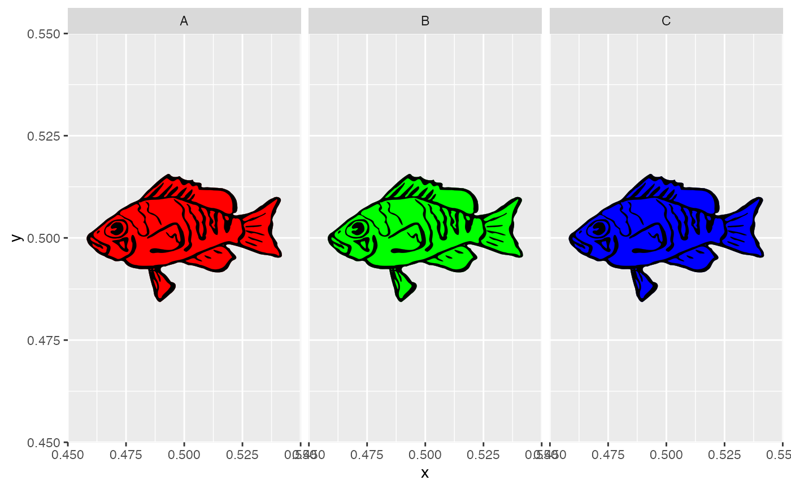

hypo_recolor_grob_table turns a svg obect into a table of color variants.
hypo_recolor_grob_table( svg, layer = 1, levels, colormap, x = rep(0.5, length(levels)), y = rep(0.5, length(levels)), angle = rep(0, length(levels)), width = 1, height = 1 )
| svg | svg object (manatory), the svg object |
|---|---|
| layer | integer skalar (manatory, default = 1), the layer to recolor |
| levels | vector (manatory), the levels of the intended facets |
| colormap | string vector (manatory), the new colors |
| x | numeric vector (optional), x-center of the annotation (length = length(leveles)) |
| y | numeric vector (optional), y-center of the annotation (length = length(leveles)) |
| angle | numeric scalar (optional), angle of the annotation |
| width | numeric scalar (optional), width of the annotation |
| height | numeric scalar (optional), height of the annotation |
This function creates a tibble of colorvariants from a 'raw' svg.
This table can then be fed into geom_hypo_grob() to annotate
factes of a ggplot with individual color variants of the svg image.
svg_file <- system.file("extdata", "logo.c.svg", package = "hypoimg") svg <- hypo_read_svg(svg_file) svg_tab <- hypo_recolor_grob_table(svg,LETTERS[1:3], c('red', 'green', 'blue'), layer = 1) ggplot() + geom_hypo_grob(data = svg_tab, aes(x =x, y = y, grob = grob)) + facet_wrap(grp ~ .)